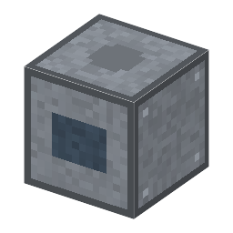

説明
①子ども 回るダイヤモンドの刃で、仕上がったウェハーをチップに切る。手で割るより欠けが少ない。
②学生 ウェハー ＋ ダイヤモンドの刃 ＋ ボールねじ（台、減らない）＋ 1.5kW×10秒 → チップ8個。1個欠ける確率はボールねじの段階で 4%・2%・1%（手でけがくと 10%）。
③大人 ダイヤモンドの粒を付けた薄い円盤を、水をかけながらとても速く回して、まっすぐな溝を切る。精密な台がウェハーを送る。チップが大きく、ウェハーが厚くなると、けがいて割る方法から切る方法に代わった。⚠️ 広まった年（1960年代の終わり〜70年代）は確かめていない。
④ガチ 切りしろは数十µm しかないので、むだになるシリコンが少ない。今は、チップが散らばらないようにウェハーをテープに貼ってから切る。⚠️ 電力・時間・欠ける確率はゲームの値。
作り方
使い道
（このアイテムを使うレシピは無い）